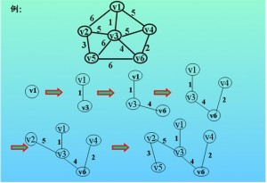

定义
一个有 n 个结点的连通图的生成树是原图的极小连通子图，且包含原图中的所有 n 个结点，并且有保持图连通的最少的边。
准则
构成最小生成树的准则有3条：
（1）必须是应该网络的边来构造最小生成树，不可以凭空捏造边哦。
（2）必须使用且仅使用n-1条边来连接网络中的n个顶点。
（3）不能使用产生回路的边。
构成最小生成树的主要算法有：克鲁斯卡尔（Kruskal）算法，普利姆（Prim）算法，和Boruvka算法
普利姆（Prim）算法
基本思想
以顶点为主导地位，从起始顶点出发，通过选择当前可用的最小权值边依次把其他顶点加入到生成树中来。
具体操作
设连通无向网为G（V,E），在该算法中，将点集合分成两个子集合T,T'，T代表在最小生成树里的点的集合，T'代表不在当前生成树里的点的集合。
（1）从连通网G中选择一个起始顶点u0，首先将它加入到集合T中，然后选择与u0关联的，具有最小权值的边（u0，v），将顶点v加入到集合T中。
（2） 以后的每一步从一个顶点在T中，另一个顶点在T'中 的各条边中选择权值最小的边（u,v），把顶点v加入到T中，如此继续，直到网络中的所有顶点都加入到集合T中。

接下来以上图为例讲解prim算法的实现过程
（1）将顶点v1放入集合T中，此时，T中只有一个顶点，一个顶点在T,另一个顶点在T’中的边中权值最小的为1，即v1连接的v3顶点，这样，将v3顶点放入T集合中。
（2）现在T集合中就有2个顶点v1,v3了，一个点在T中，另一个点在T'中的边权值最少的是4，即v3和v6相连的边，所以v6也进入集合T中。
（3）现在集合T中有3个顶点v1,v3,v6，一个点在T中，另一个点在T'中的边权值最少的是2，即v4和v6连的边，所以v4也进入集合T中。
（4）现在集合T中有4个顶点v1,v3,v6,v4,一个顶点在T中，另一个顶点在T'中的边的权值最少的是5，即v3和v2相连的边，所以v2也加入到集合T中。
（5）现在，T'中只剩下一个顶点v5，也就是看，所有和v5 相连的边中权值最小的，我们找到了v5和v2相连的边，权值为3，所以v5也加入到了集合T中。
（6）这样，最小生成树就建成功了。
Prim的算法实现
Prim算法一般应用于稠密图，所以一般采用邻接矩阵来存储图，在运算的过程中，我们需要知道的是存放顶点集合T‘内各顶点到顶点集合T内各顶点权值最小的边的权值，用lowcost[]存储，还需要知道的是顶点集合T'内各顶点距离顶点集合T内哪个顶点最近，用nearvex[]存储，当nearvex[i]存储的值是-1的时候，表示i点已经放入T中。
实现过程：
（1）初始化：最初的时候T中只有一个顶点1，所以在nearvex[]数组中将nearvex[1] = -1,其他元素值都是1，lowcost[]数组初始值就是顶点1到其它点的距离。
接下来重复一下步骤：
（2）在lowcost[]数组中寻找权值最小的顶点并且该顶点没有加入到生成树中，用v进行标记。
（3）将nearvex[v]更改为-1，代表已经将v点加入到生成树中，相应的对该边进行操作，比如加和，输出权值等操作。
（4）修改lowost数组，因为加入新的顶点之后，就相当于新增加了和该点相邻的边，那么原来记录的T中顶点到T'中顶点最短的距离可能就会发生变化，所以要更新距离数组。
lowcost[10000];
nearvex[10000];
void Prim()
{
int i,j,sum = 0;
memset(nearvex,-1,sizeof(nearvex));
nearvex[1] = 1;
for(i = 1;i <= n;i++)
{
lowcost[i] = mapp[1][i];
}
for(j = 1;j < n;j++)
{
mi = 0x3f3f3f3f;
bj = 0;
for(i = 1;i <= n;i++)
{
if(lowcost[i] < mi && nearvex[i] == -1)
{
bj = i;
mi = lowcost[i];
}
}
if(mi == 0x3f3f3f3f)
break;
sum += mi;
nearvex[bj] = 1;
for(i = 1;i <= n;i++)
{
if(nearvex[i] == -1 && mapp[bj][i] < lowcost[i])
{
lowcost[i] = mapp[bj][i];
}
}
}
}
克鲁斯卡尔（Kruskal）算法
基本思想
以边为主导地位，始终都是选择当前可用的最小权值的边。
具体操作
（1）设一个有n个顶点的联通网络为G（V,E），最初先构造一个只有n个顶点，没有边的非联通图T = {V,空}，图中每个顶点自称一个联通分量。
（2）当在E中选择一条具有最小权值的边时，如果该边的权值落在不同的联通分量上，则将此边加入T中;否则，即这条边的两个顶点落在同一个联通分量上，则将此边舍去，重新选择一条权值最小的边。
（3）重复上面的过程，直到所有顶点都在同一个联通分量上为止。
从这三步的具体操作中，我们可以看出最重要的就是不断地向生成树中加边的过程，这个过程有两个最关键的步骤：
（1）从E中选择当前权值最小的边(u,v)，实现时可以用两种方法，一种是最小堆存放边，另一种是将边的信息（顶点，权值）存放进一个结构体数组中，并将数组中的元素按照权值从小到大排序，然后按照先后顺序选用边。
（2）当选取好一条边之后，需要查找这条边的两个顶点是不是在同一个连通分量中，如果是，则需要舍去，如果不是，那么将这两个顶点归并到同一个连通分量中。这个步骤的实现，就用到了之前讲过的并查集。这里对并查集的基础概念就不细写了，着重介绍并查集的搜索合并以及路径压缩。
并查集简单应用
并查集数据结构有3个主要的函数，一个是初始化，一个是根节点的查找，最后一个是合并集合，其中合并集合调用了根节点的查找函数。
声明：这里运用的并查集父节点中存储的值是一个负数，其绝对值代表这棵树上节点的总个数，以此来记录总结点，判断是否所有节点都已经加进最小生成树中。
void UFset()//初始化
{
for(int i = 0;i < n;i++)
{
parent[i] = -1;
}
}
int Find(int x)
{
int s = x;
while(s >= 0)s = parent[s];//查找根节点
//接下来是路径压缩，将x到其根节点的所有节点的父亲都归到根节点中去，
//减少生成树的高度，方便以后的遍历查找
while(s != x)
{
int tmp = parent[x];
parent[x] = s;
s = parent[x];
}
}
void Union(int x,int y)
{
int fx = Find(x);//查找x的根节点
int fy = Find(y);//查找y的根节点
//记录两个联通变量的总结点个数（显示为负数）
int sum = parent[fx] + parent[fy];
if(fx != fy)
{
//如果x所在的树总结点大于y所在的树的总节点
//那么就吧y所在的树连接到x所在的树上
//因为个数是用负数展现的，所以这里是小于号
if(parent[fx] < parent[fy])//这是优化方案——加权法则
{
parent[fy] = fx;//将y所在的树连接到x所在的树上
parent[fx] = sum;//更改总结点个数
}
else
{
parent[fx] = fy;
parent[fy] = sum;
}
}
}
Kruskal算法实现
我们就以下面的示例图片进行讲解

从图中，我们看出一共有6个顶点，10条边，边的权值从小到大依次为1（v1,v3），2（v4,v6），3（v2,v5），4（v3,v6），5（v1,v4）,5（v3,v4）,5（v2,v3）,6（v3,v5）,6（v1,v2）,6（v5,v6）。
（1）初始状态下，每个顶点自成一个集合，和自己联通。
（2）加入第一条边1（v1,v3）,调用并查集函数，发现v1,v3在不同的分量中，将他们两个连通，现在只有v1,v3连通。
（3）加入第二条边2（v4,v6），调用函数发现v4,v6在不同的两个分量中，将他们连通，现在有v1,v3连通，v4,v6连通。
（4）加入第三条边3（v2,v5）,调用函数发现v2,v5在不同的两个分量中，将他们连通，现在有v1,v3连通，v4,v6连通，v2,v5连通。
（5）加入第四条边4（v3,v6）,调用函数发现v3,v6在不同的分量中，并且v3和v1连通，v6和v4连通，即v3所在的树有两个节点，v6所在的树有两个节点，将v6连接在v3所在的树上，现在有v1，v3，v4，v6连通，v2，v5连通。
（6）加入第五条边5（v1,v4），调用函数发现v1,v4已经在同一个分量中了，所以不需要加这条边。
（7）加入第六条边5（v3,v4）,调用函数发现v3,v4已经在同一个分量中了，所以不需要加这条边。
（8）加入第七条边5（v2,v4），调用函数发现v4所在的树中有4个顶点，v2所在的树中有2个顶点，将v2所在的树连接到v4所在的树，现在有v1，v3，v4，v6，v2，v5连通，到现在为止，6个顶点全部连通，不需要之后的加边过程，最小生成树结束。
（9）根据题目要求输出各种数据（总权值等）。
下面是克鲁斯卡尔的代码实现过程：
struct E
{
int i,j;
int quan;
};
E edge[1000];
int cmp(E a,E b)
{
return a.quan < b.quan;
}
void kruskal ()
{
int i,j,k,u,v;
int sum = 0,num = 0;
sort(edge,edge+m,cmp);//对边进行从小到大排序
UFset();//对parent数组初始化
for(i = 0;i < m;i++)
{
u = edge[i].i;v = edge[i].j;
if(Find(u) != Find(v))
{
sum += edge[i].quan;
num++;
union(u,v);
}
if(num >= n-1)
break;
}
printf("%d\n",sum);
}